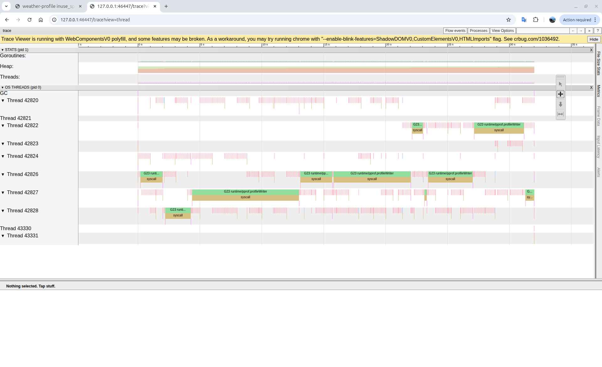
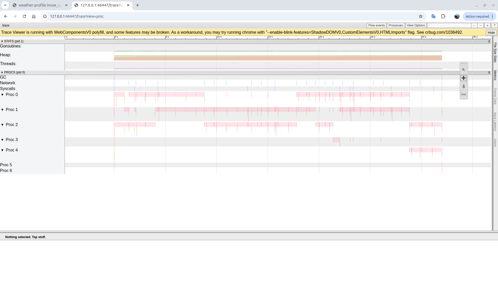
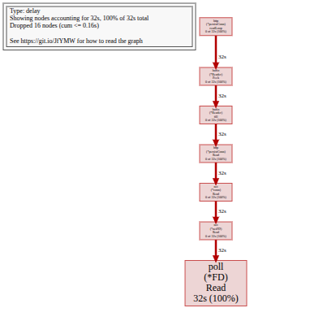
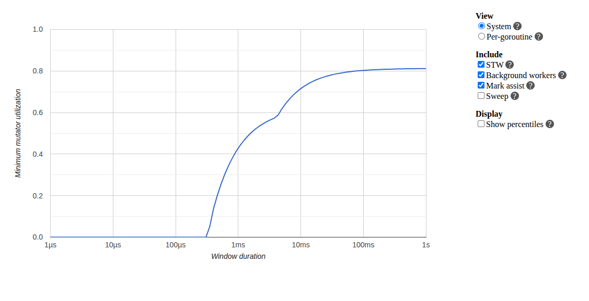

The Hidden LLM Call: Why AgenticGoKit Was 2x Slower
How a hidden continuation loop, a leaky network stack, and pprof helped Go reclaim the fast path.

Situation: “Why is Go slower than Python?”
I wasn’t supposed to lose this benchmark.
The Ollama-backed AgenticGoKit agent, written in Go, optimized, compiled, was being handily beaten by a comparable LangChain Python agent. The numbers on a simple tool call were embarrassing:
- Go: 3.6s
- Python: 1.97s
Worse, latency variance hovered around 60%, making performance completely unpredictable. But here’s what really puzzled me: disabling reasoning didn’t help. Whether reasoning was on or off, the agent felt equally sluggish.
Something was fundamentally wrong, and it wasn’t Ollama.
To make sure I wasn’t missing something obvious, I profiled the Python LangChain agent too — CPU profiles, traces, the works. It was blazingly fast: minimal overhead, clean execution, single LLM call followed by a client-side tool execution. No continuation logic, no extra round trips.
So it was something in AgenticGoKit’s architecture.
Task: Restore the fast path without breaking the agent
I set two clear, non-negotiable goals:
- Match or beat the Python baseline for simple, single-step tool calls
- Preserve multi-step reasoning as an opt-in feature, powerful when needed, invisible when not
The constraint: no API breakage, no “just rewrite it” shortcuts. Whatever was slowing it down had to be lurking in the hot path, and I needed to find it.
Action: Follow the time
1. First suspect: the network layer
I started where any performance investigation should: with the profiler. The initial pprof profiles immediately pointed to significant time spent in HTTP connection setup and teardown.
What pprof revealed:

Trace view (threads): Multiple goroutines blocked in network I/O; green blocks showruntime/net/poll operations with syscalls consuming significant time

Trace view (procs): CPU cores (Proc 0-4) sitting idle with sparse activity; the pink vertical lines show brief bursts of work separated by long waits
Flame graph:poll (*FD) Read consuming 32s (100% of sampled time); the smoking gun pointing to HTTP reads dominating execution

Mutator utilization: Only reaching ~80% efficiency maximum, with the curve showing significant time spent blocked rather than executing application codeThe visual evidence was damning: time was being spent waiting on the network rather than processing requests.
The problem: Multiple places in the codebase were creating new HTTP clients on every request:
// WRONG: Creating new client per call
client := &http.Client{Timeout: 30 * time.Second}
resp, err := client.Do(req)
This antipattern meant:
- No connection reuse
- New TCP handshake every time
- No keep-alive
- TLS overhead on every call
The fix: I implemented comprehensive network optimization with a properly configured shared client:
- Optimized HTTP transport with connection pooling
- MaxIdleConnsPerHost: 20 (vs default 2)
- MaxConnsPerHost: 50 for high concurrency
- HTTP/2 support enabled
- Proper keep-alive configuration
// CORRECT: Reuse optimized client
resp, err := o.httpClient.Do(req)
Early results: Variance dropped from ~60% to <10%. Connection reuse was clearly working.
But: Performance was still disappointing. The network fix helped with variance, but the code was still slower than Python. The profiler was about to reveal why.
2. pprof reveals the real villain: two LLM calls
With network variance under control, I profiled both the Go and Python implementations to understand where time was spent.
Python LangChain (1.97s total):
[0.000s] Start
[0.000s] LLM call with tools
[1.900s] LLM returns: "I'll use check_weather for sf"
[1.920s] Execute check_weather locally → "It's always sunny in sf"
[1.970s] Return result + formatting
[1.970s] TOTAL
Single LLM call. Tool execution client-side. Done.
Go AgenticGOKit (3.6s total):
[0.000s] Start
[0.000s] LLM Call #1 begins
[1.950s] LLM Call #1 returns
[1.970s] Execute tool
[2.420s] Build continuation prompt
[2.450s] LLM Call #2 begins ← EXTRA CALL
[4.400s] LLM Call #2 returns ← EXTRA WAIT
[4.500s] Return result
[3.608s] TOTAL (after network optimization - measured)
Two LLM calls. The second one wasn’t visible in the code without profiling.
Our detailed overhead analysis confirmed it:
- Total execution: 5.2s
- Ollama latency: ~2.0s per call
- Framework overhead: 3.2s (61.6% of total)
- Implied LLM calls: ~2.5 calls per query
The implementation wasn’t just slow; it was doing twice the work on every request.
3. Understanding the architecture: why two calls?
AgenticGoKit’s original design was built around maximum compatibility:
Call 1 (Decision): Even for models without native tool-calling support, AgenticGoKit would make an LLM call asking: “Given these available tools, which one(s) should I use to solve this task?”
Call 2 (Processing): After executing the chosen tool, a second LLM call would process the tool result and formulate the final answer.
This design was genuinely powerful; it worked with any LLM, even those without native tool-calling support. But it came with a cost: every request made two calls, even trivially simple ones.
During optimization work, the architecture had evolved:
- If model supports native tool calling: Use the model’s built-in function-calling API (single call)
- Fallback: Use the LLM-based tool decision logic (two calls)
The design insight: AgenticGoKit’s continuation loop wasn’t built by accident. It was an intentional trade-off:
- LangChain: Fast for simple tool calling (1 LLM call), but can’t reason about results
- AgenticGoKit: Slower for simple calls (2 LLM calls), but enables multi-step reasoning
This is why the second LLM call existed — to allow the model to reason about the tool result, not just retrieve it. But this came at a latency cost for simple tasks.
But a subtle bug lurked in the implementation…
4. The bug: reasoning off… but still continuing
Here was the turning point that explained everything.
Even with WithReasoning(false) (which sets maxIterations = 1), the agent still made a continuation call. The fast path wasn’t fast because it was still taking the slow path.
The problem: The iteration check happened after the continuation request, not before.
// WRONG IMPLEMENTATION
for iteration < maxIterations {
// Execute tools...
// Always made continuation call, even when maxIterations=1
continuationPrompt := ...
response, err := a.llmProvider.Call(ctx, continuationPrompt) // EXTRA CALL!
iteration++
// Check comes too late
if iteration >= maxIterations {
break
}
}
In other words:
- Reasoning disabled ✓
- Max iterations = 1 ✓
- Second LLM call still happens ✗
This explained why disabling reasoning didn’t help performance; the continuation call was happening regardless of the setting.
The fix: I moved the iteration guard ahead of the continuation call, in both native and non-native tool paths.
// CORRECT IMPLEMENTATION
for iteration < maxIterations {
// Execute tools...
iteration++
// Check FIRST - prevents unnecessary continuation
if iteration >= maxIterations {
break // Skip continuation entirely
}
// Only make continuation call if continuing
continuationPrompt := ...
response, err := a.llmProvider.Call(ctx, continuationPrompt)
}
That single change removed an entire LLM round trip from the fast path. Sometimes the biggest performance wins come from the simplest fixes.
5. Make the fast path explicit
Fixing the bug wasn’t enough; the intent needed to be crystal clear and unmissable in the code.
I introduced a proper ReasoningConfig:
Enabled(default:false)MaxIterationsContinueOnToolUse
And exposed it cleanly through:
WithReasoning(...)WithReasoningConfig(...)
Now there’s a clear, explicit contract:
- Fast path (default): Single LLM call, native tool calling when available
- Reasoning path (opt-in): 2 to 5 calls, explicitly chosen for complex tasks that need it
The defaults finally matched the common case.
6. Measure again (and smile)
I reran everything with religious fervor:
- Single-call microbenchmarks
- Reasoning on vs off
- A 6-city benchmark across regions
The results told a very different story.
Result: From lagging to leading
Fast path restored
With reasoning disabled (now the default):
- Before: ~3.0s per call (2 LLM calls)
- After: ~1.0s per call (1 LLM call, approximately 3× faster)
The 6-city run dropped to 6.0s total. I found the fast path.
Reasoning works when you ask for it
With reasoning explicitly enabled:
- 2 to 5 LLM calls, as designed
- ~5.2s per call, predictable and intentional
No accidental slow paths anymore. The feature works exactly when you need it, and stays out of the way when you don’t. Use reasoning when your task requires multi-step planning, analysis of tool results, or tool chaining (e.g., “research and compare three products”); skip it for simple queries like “what’s the weather in SF?”
Variance crushed
Thanks to connection pooling and transport optimization:
- Before: ~60% latency variance
- After: <10%
Predictable performance at last.
Before vs After (6-city run, Ollama granite4)
| Scenario | Go | Python | Winner |
|---|---|---|---|
| Before (conn reuse) | 38.139s (6.356s/call) | 18.503s (3.084s/call) | Python |
| After (conn reuse) | 9.207s (1.534s/call) | 17.758s (2.959s/call) | Go |
| After (cold start) | 9.422s (1.570s/call) | 22.622s (3.770s/call) | Go |
Go now leads decisively.
The optimizations delivered:
- 75.9% faster than the original implementation (38.1s → 9.2s)
- 48.1% faster than Python with warm connections (17.8s vs 9.2s)
- 58.3% better on cold starts (22.6s Python vs 9.4s Go)
I wasn’t supposed to lose that benchmark. Now I don’t.
What actually changed
Phase 1: Network optimization
- Shared, properly tuned HTTP transports with connection pooling
- Connection reuse and HTTP/2 enabled by default
- MaxIdleConnsPerHost increased from 2 to 20
- Eliminated per-call client allocations completely
Impact: Variance dropped from 60% to <10%, but performance still lagged
Phase 2: Continuation loop fix
- Iteration check moved before continuation call
- Reasoning defaults to disabled (fast path first)
- Native tool calling used when model supports it
- Fallback to LLM-based tool decision only when necessary
Impact: Eliminated 1 LLM call per request, unlocked the 3× speedup
The network fix made performance predictable. The continuation fix made it fast.
Takeaways
-
One extra LLM call will erase any language-level performance advantage. The 2-call architecture made Go uncompetitive regardless of how well optimized everything else was. When calling out to a model, algorithm complexity matters more than implementation language.
-
Continuation loops deserve the same scrutiny as retry loops. A single misplaced iteration check can silently double your latency. Guard conditions matter.
-
HTTP client reuse and transport tuning matter as much as model choice. The network layer bottleneck was real, but it was also hiding the deeper continuation bug. Fix both.
-
pprof doesn’t just find slow code; it finds wrong assumptions. Without profiling, we’d still be tweaking JSON parsers and optimizing string concatenation while making two LLM calls per request. Measure, don’t guess.
-
Default behavior matters more than features. Reasoning is powerful for complex tasks, but making it opt-in (not default) keeps the common case fast. Most requests don’t need multi-step reasoning.
Try it yourself
Run the performance examples with --reasoning on and off to see the two-call pattern directly:
cd examples/performance-analysis/simple-agent
# Fast path (default) - single LLM call
go run weather-profile.go
# With reasoning enabled - two or more LLM calls
go run weather-profile.go --reasoning
You should see:
-
~1.5s per call with reasoning disabled (default)
- Single LLM call with native tool calling
- Tool result is the answer; no continuation
-
~4.8s per call with multi-step reasoning explicitly enabled
- Two+ LLM calls (plan + continuation)
- Output shows “Results: - check_weather(…) - echo(…)” — the continuation response
- Model can reason about tool results and refine answers
-
Stable, predictable latency either way (variance <10% after network optimization)
The fast path is finally fast, and now, it’s intentional. When you need reasoning, you ask for it. When you don’t, you get single-call performance.